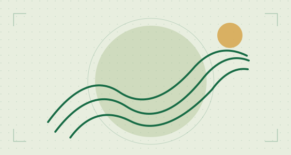
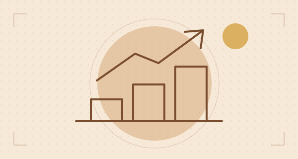
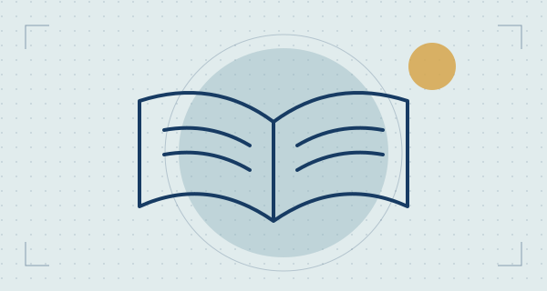
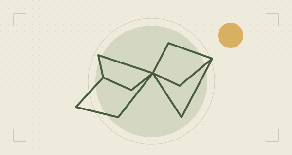
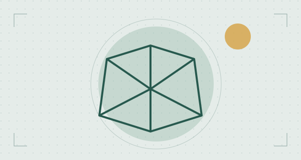

Objectivos estatutários
Áreas de actuação
Os cinco objectivos do artigo 4.º orientam o trabalho da ANUDSE-ZU. Os exemplos abaixo apresentam possibilidades de intervenção.
Nesta página
Área 01 · Artigo 4.º
Desenvolvimento Sustentável
Promover o desenvolvimento sustentável do distrito de Zumbo.
Apoiar soluções locais que conciliem os meios de subsistência com o cuidado dos recursos naturais e as necessidades das comunidades.
Exemplos de iniciativas possíveis
- Intercâmbio de práticas agrícolas adaptadas às condições locais.
- Acções comunitárias para a conservação do solo e da água.

Área 02 · Artigo 4.º
Empreendedorismo Juvenil e Comunitário
Incentivar o empreendedorismo juvenil e comunitário.
Criar condições para que jovens e grupos comunitários desenvolvam competências, organizem ideias e explorem oportunidades económicas no distrito.
Exemplos de iniciativas possíveis
- Oficinas de planeamento de pequenos negócios.
- Trocas de experiência entre jovens empreendedores e produtores locais.

Área 03 · Artigo 4.º
Educação, Cultura, Saúde e Ambiente
Apoiar iniciativas de educação, cultura, saúde e ambiente.
Colaborar em iniciativas que valorizem a aprendizagem, as expressões culturais e a saúde comunitária e que reforcem o cuidado com o ambiente.
Exemplos de iniciativas possíveis
- Sessões de leitura e partilha de tradições locais.
- Acções de sensibilização sobre higiene e gestão de resíduos.

Área 04 · Artigo 4.º
Solidariedade Comunitária
Estimular a solidariedade entre os nativos e amigos de Zumbo.
Fortalecer relações de entreajuda entre quem vive no distrito, quem dele é originário e quem deseja contribuir para o seu desenvolvimento.
Exemplos de iniciativas possíveis
- Redes de partilha de competências e recursos.
- Mobilização comunitária em resposta a necessidades identificadas em conjunto.

Área 05 · Artigo 4.º
Cidadania Activa e Coesão Social
Reforçar a coesão social e o exercício da cidadania activa.
Incentivar a escuta, a participação e o diálogo entre grupos da comunidade sobre questões de interesse comum.
Exemplos de iniciativas possíveis
- Encontros de diálogo sobre prioridades locais.
- Conversas com jovens sobre participação cívica e responsabilidades comunitárias.

Participe
Tem uma proposta para Zumbo?
Conheça as informações que pode reunir para propor uma parceria.